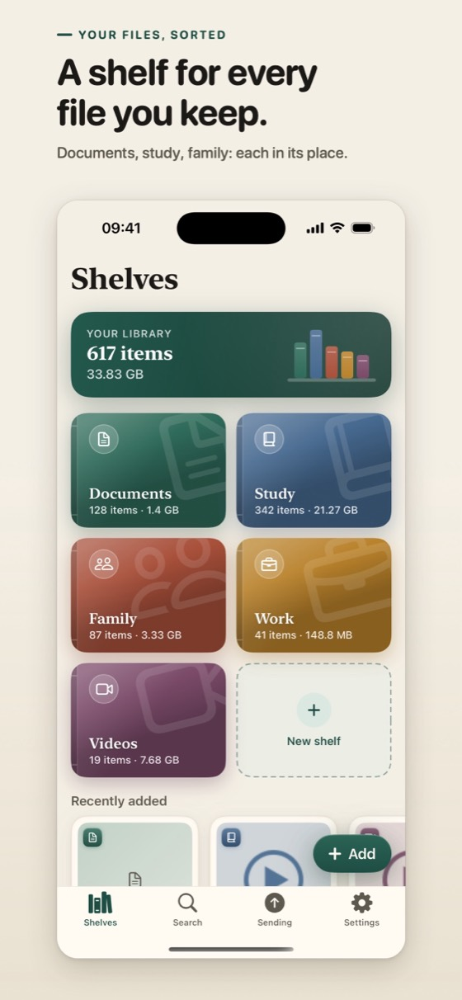
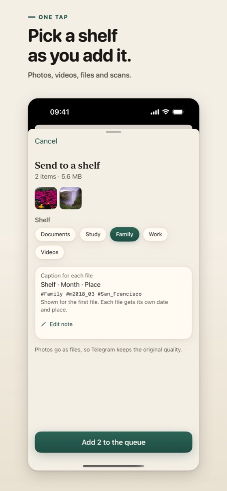

Fayllaringiz tokchalarda saralangan, o'z Telegram akkauntingizda turadi
Cloud Shelves o'z Telegram akkauntingizni fayllar kutubxonasi sifatida ishlatadigan iPhone ilovasi. Siz suratlar, videolar va hujjatlarni tanlaysiz, ilova ularning nusxalarini akkauntingizdagi bitta kanalga yuboradi, telefoningizda esa ularni tokchalarda saralab ko'rsatadi.


Ilova nima qiladi
- Tokchalar. Hujjatlar, o'qish, oila, ish va videolar uchun tayyor tokchalardan boshlang va o'zingiznikini qo'shing: har biriga ikonka va rang tanlanadi.
- Oylar. Tokcha ichida fayllar oylar bo'yicha guruhlanadi. Qidiruv ularni nomi, tokchasi yoki oyi bo'yicha topadi.
- PDF ga skanerlash. Qog'oz hujjatlarni kamera bilan skanerlang va PDF qilib saqlang.
- Allaqachon yuborilgan. Avval yuborgan fayllaringiz belgilanadi, shuning uchun ularni ikki marta yubormaysiz.
- 2 GB dan katta videolar. Bepul Telegram akkaunti har bir faylni 2 GB gacha qabul qiladi. Juda katta videoni bo'laklarga bo'lish o'rniga, sig'adigan qilib kichraytirish mumkin.
- Yangi telefon. Qayta kirsangiz, tokchalaringiz kanaldan qaytib keladi.
Qanday ishlaydi
- Kirishdan oldin ilova bir marta so'raydi: Telegram akkauntingizda fayllaringiz uchun kanal yaratsa bo'ladimi.
- Siz Telegram orqali kirasiz. Ilova o'sha kanalni topadi yoki yaratadi: faqat siz a'zo bo'lgan bitta kanal.
- Siz fayllar va tokchani tanlaysiz. Ilova nusxalarni birma-bir yuboradi. Suratlar fayl sifatida ketadi, shuning uchun Telegram ularning asl sifatini saqlaydi.
- Tokcha va oy har bir fayl izohiga heshteg qilib yoziladi, shuning uchun fayllaringizni Telegramning o'z ilovalarida ham oson topasiz.
- Kanalda qadalgan kichik indeks fayli orqali ilova tokchalaringizni boshqa telefonda qaytara oladi.
Cheklovlar haqida ochiq
- Telegram bulutli chatlari, shu jumladan bu kanal, end-to-end shifrlanmagan. Ular server-mijoz shifrlashidan foydalanadi va Telegram bulutida shifrlangan holda saqlanadi. Asl fayllaringizni saqlab qoling. Shifrlash haqida batafsil.
- Bepul akkauntda bitta fayl 2 GB gacha bo'lishi mumkin. Cloud Shelves bepul akkauntlar bilan ishlaydi va hech qachon Telegram Premium talab qilmaydi.
- Telegramning dasturchilar uchun hujjatlarida aytilishicha, ko'p ma'lumot uzatilgandan keyin bepul akkauntlarda fayl yuborish va yuklab olish tezligi cheklanishi mumkin. Telegram ilovadan sekinlashni so'rasa, ilova kutadi, so'ng davom etadi.
- Yuborish faqat siz fayl qo'shganingizda boshlanadi. Ilova galereyangizni o'z-o'zidan nusxalamaydi.
- Ilova nusxalarni yuboradi. U telefoningizdagi fayllarni hech qachon ko'chirmaydi va o'chirmaydi.
- Akkauntingizdagi hamma narsaga Telegramning foydalanish shartlari va ma'lumotlar siyosati amal qiladi.
Ilova nima hisobiga ishlaydi
Cloud Shelves bepul va Google AdMob reklamasini ko'rsatadi: «Tokchalar» ekrani oxirida banner va fayl qo'shganingizdan keyin kuniga ko'pi bilan ikki marta to'liq ekranli reklama, birinchi kuningizda esa u chiqmaydi. Sozlamalardagi bitta qisqa video reklamani 24 soatga o'chiradi. Xaridlar yo'q. Google nimalarni olishi Maxfiylik siyosati sahifasida yozilgan.
Cloud Shelves mustaqil ilova. U Telegram tomonidan yaratilmagan va tasdiqlanmagan.
Tez orada App Store'da
Bepul, Google AdMob reklamasi bilan. Bepul Telegram akkaunti bilan ishlaydi.
Qo'llanmalar
- Telegramda fayl hajmi cheklovi qancha?Telegram bepul akkauntda har bir faylni 2 GB gacha, Premium bilan 4 GB gacha qabul qiladi. Baytdagi aniq son va bu videolar, izohlar va tezlik uchun nimani anglatadi.
- Surat va videolarni siqmasdan qanday yuborish mumkinAsl sifatni saqlash uchun Telegramda rasm va videolarni fayl sifatida yuboring. iPhone ilovasi uchun qadamma-qadam yo'riqnoma va bunda nima o'zgarishi.
- Telegram bulutli xotira sifatida: afzallik va kamchiliklar haqida ochiqTelegramda surat, video va hujjatlarni saqlasa bo'ladimi? Nima yaxshi ishlaydi, nimadan ehtiyot bo'lish kerak va bepul akkaunt cheklovlari, manbalari bilan.
- Telegramda fayllarni qanday tartiblash mumkinTelegramda fayllarni oson topish uchun: fayllar uchun bitta chat, heshtegli izohlar, chat ichida qidiruv va umumiy media bo'limlari. Bepul akkauntda ham ishlaydi.
- Videoni 2 GB dan qanday kichik qilish mumkin2 GB dan katta video bepul Telegram akkauntida yuborilmaydi. Hajm bitreyt va davomiylikka qanday bog'liq va videoni qanday kichraytirish: konvertatsiya, aniqlik, kesish.
- Telegram bulutli chatlari end-to-end shifrlanganmi?Telegram bulutli chatlari, jumladan kanallar va Saqlangan xabarlar, end-to-end shifrlanmagan. Faqat secret chatlar shifrlangan, ular ham faqat boshlangan qurilmada.
- Saqlangan xabarlar yoki o'z kanalingiz: fayllar uchun qaysi biri yaxshi?Saqlangan xabarlar o'zingiz bilan chat, faqat siz a'zo bo'lgan kanal esa alohida lenta. Fayl saqlashda ular qanday farq qiladi va qachon qaysi birini tanlash kerak.